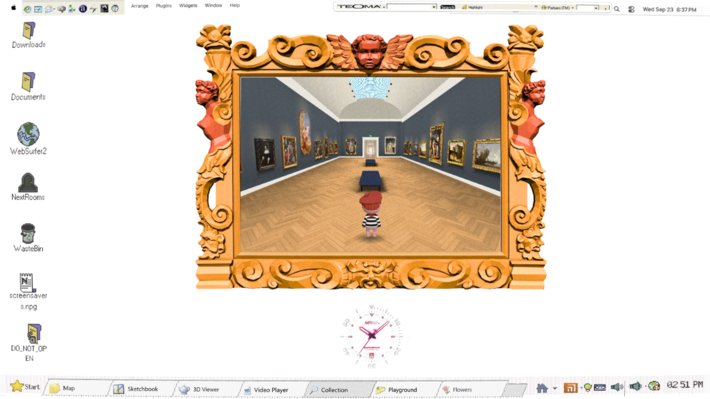
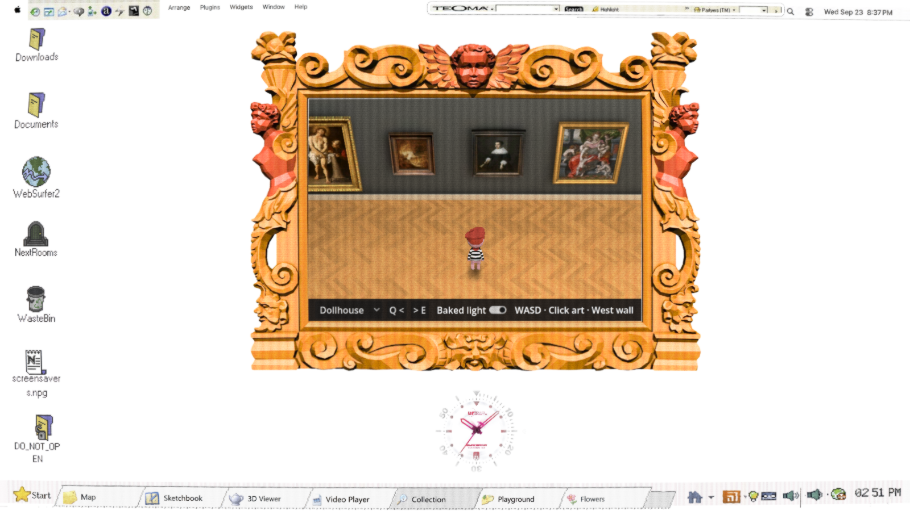
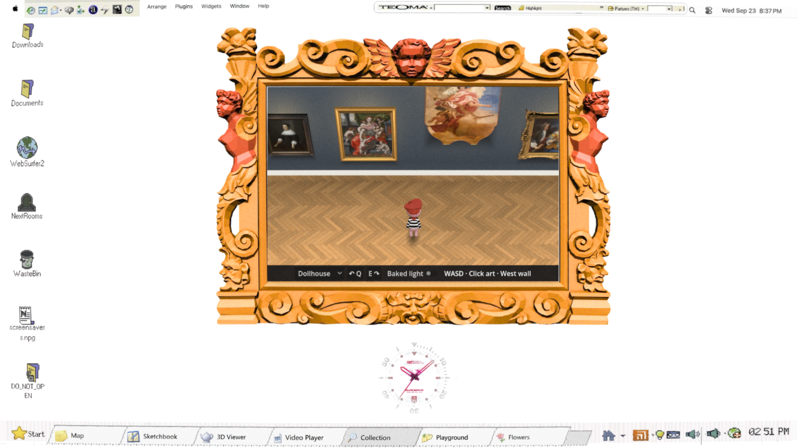
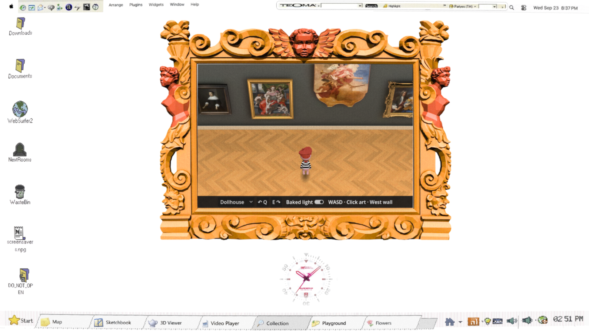

Open the prototype · WASD to move, Q/E to change walls. Compare the camera presets and Baked light switch.
Existing textures reused; no new Muse pass. The back-view character is a placeholder.




Chrome: approximately 60 fps in each phase; median 16.7 ms, p95 at most 16.8 ms. 23/23 artworks opened; navigation, focus-loss, lighting and bake-recovery checks passed.